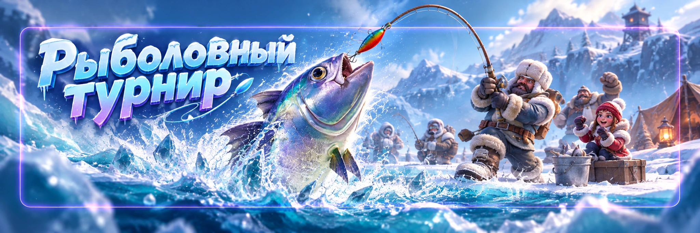
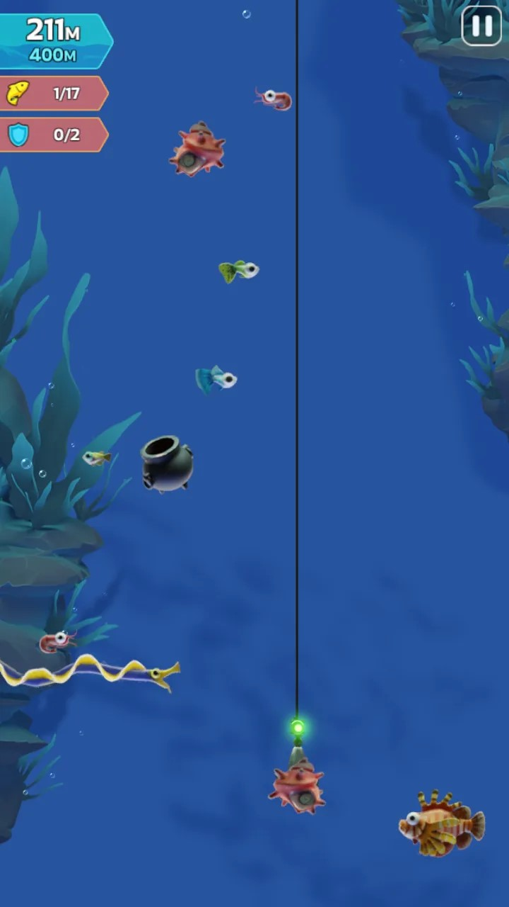
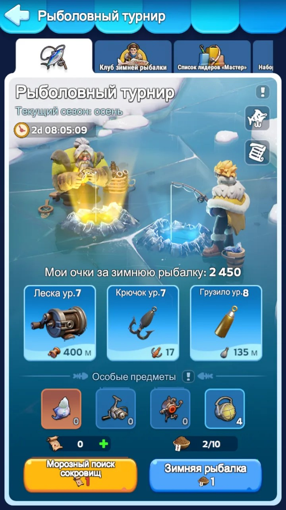

Рыболовный турнир
Рыболовный турнир — одиночное событие, в котором нужно опускать крючок как можно глубже, обходить препятствия, а на обратном пути ловить рыбу и другую добычу.
Событие проходит примерно раз в 4 недели. Главная цель может быть разной: рейтинг — набрать как можно больше очков; коллекция — поймать недостающую рыбу и другие экземпляры справочника. Перед началом лучше сразу решить, что для вас сейчас важнее.
Как работает рыбалка

Каждая попытка состоит из двух частей.
Спуск
Во время спуска ваша задача — пройти как можно глубже.
Старайтесь не задевать рыбу и другие препятствия головой крючка.
После определённого количества столкновений крючок перестаёт опускаться и начинает автоматически возвращаться наверх.
Чем глубже вы смогли пройти, тем больше возможностей встретить ценную и редкую добычу.
Один из самых удобных способов — держаться ближе к левому или правому краю экрана и отходить от края только для обхода препятствий.
Подъём
Когда крючок начинает подниматься, начинается сама ловля.
Чтобы поймать рыбу: заденьте крючком её голову.
Попадание в хвост рыбу не ловит.
Поэтому на спуске иногда можно безопасно пройти рядом с телом или хвостом большой рыбы, а на подъёме уже целиться именно в голову.
Вместимость крючка
За одну попытку нельзя забрать бесконечное количество добычи. У крючка есть ограничение.
Поэтому не всегда выгодно хватать первую попавшуюся рыбу.
Если играете на высокий результат или ищете конкретный экземпляр, оставляйте свободное место для более ценной добычи.
Если играете на рейтинг
Для рейтинга главная задача: глубина + ценная добыча + хороший подъём.
- пройти как можно глубже;
- избегать лишних столкновений;
- не забивать крючок дешёвой добычей слишком рано;
- выбирать более редкую и ценную рыбу;
- использовать сильные специальные предметы на хорошие попытки.
Если начало получилось очень плохим, не обязательно заканчивать заход. Можно использовать «Отступить» и попробовать снова.
Если собираете коллекцию
Перед рыбалкой сначала откройте справочник и посмотрите, каких экземпляров вам не хватает.
Не нужно пытаться ловить всё подряд.
Учитывайте сезон события. Сезоны меняются по порядку:
- Зима
- Весна
- Лето
- Осень
Часть рыбы связана с определённым сезоном. Если нужной рыбы в текущем сезоне нет, бессмысленно тратить на неё специальные предметы.
Рог Посейдона
Рог Посейдона — один из самых ценных предметов Рыболовного турнира.
Он позволяет выбрать нужную рыбу и вызвать её во время следующей попытки.
Вызванная рыба подсвечивается, а найти её помогает Океанический сканер.
Рог не ловит рыбу автоматически. Вам всё равно нужно добраться до неё и поймать её крючком на обратном пути.
Поэтому не тратьте Рога Посейдона на обычную рыбу, которую ещё можно легко получить естественным путём. Лучше сохранять их для действительно недостающих редких экземпляров.
Если промахнулись с Рогом
Если использовали Рог Посейдона, но плохо прошли спуск, пропустили нужную рыбу, рано начали подъём или не смогли её поймать, не спешите заканчивать попытку.
Нажмите: Пауза → Отступить и попробуйте заход снова.
При повторе ценная рыба обычно остаётся примерно в том же месте, поэтому можно заранее запомнить её глубину и маршрут.
Катушечный стабилизатор
При обычной попытке количество ошибок на спуске ограничено.
Катушечный стабилизатор позволяет пережить ещё несколько столкновений и пройти глубже.
Особенно полезно использовать его при охоте за редкой рыбой, вместе с Рогом Посейдона, при попытке установить хороший результат или когда собираетесь уходить на большую глубину.
Фонарь
На большой глубине становится темно.
Фонарь улучшает видимость и облегчает прохождение глубоких участков.
Его особенно полезно сочетать с попытками, где вы хотите пройти максимально глубоко или ищете конкретную редкую добычу.
Океанический сканер
Океанический сканер помогает обнаруживать редкую рыбу поблизости.
Он показывает направление и расстояние до цели.
При использовании Рога Посейдона сканер также помогает найти вызванную рыбу.
Приманка
В начале события даётся: 5 приманок.
Затем восстанавливается: 1 приманка каждые 3 часа.
Максимально можно хранить: 10 приманок.
Если у вас уже 10/10, новая приманка не сможет нормально накапливаться, поэтому часть бесплатных попыток теряется.

Улучшайте рыболовные наборы
Во время события постепенно улучшайте рыболовное снаряжение.
Прокачка помогает проходить глубже, собирать больше добычи, делать попытки стабильнее и получать больше очков.
Не откладывайте все улучшения на конец события. Чем раньше усилено снаряжение, тем больше последующих попыток вы проведёте уже с хорошими характеристиками.
Охота за затонувшим сокровищем
Отдельная страница «Охота за затонувшим сокровищем» открывается, когда ваши рыболовные наборы достигают 9 уровня.
Но одного открытия страницы недостаточно.
Чтобы полноценно участвовать, необходимо улучшить все рыболовные наборы до максимального уровня.
Поэтому сначала прокачиваем снаряжение, а уже потом используем дополнительный режим.
Когда использовать «Отступить»
Не бойтесь перезапускать плохую попытку.
- слишком рано получили столкновения;
- не смогли пройти на нужную глубину;
- пропустили редкую рыбу;
- неправильно рассчитали маршрут к вызванной Рогом рыбе;
- поняли, что хороший результат уже невозможен.
Так можно изучить расположение рыбы и построить более удобный маршрут.
Полезные приёмы
- На спуске держитесь ближе к краю.
- Не пытайтесь ловить рыбу на пути вниз.
- На подъёме целитесь именно в голову.
- Не заполняйте крючок дешёвой добычей слишком рано.
- Перед охотой за коллекцией проверьте недостающие экземпляры.
- Учитывайте текущий сезон.
- Рог Посейдона берегите для редкой недостающей рыбы.
- Сильные специальные предметы лучше использовать вместе, когда попытка действительно важна.
- Не допускайте постоянного запаса 10/10 приманок.
- Плохой заход можно перезапустить через «Отступить».
Частые ошибки
- Ловить первую попавшуюся рыбу.
- Пытаться цеплять рыбу за хвост.
- Идти по центру экрана без необходимости и постоянно сталкиваться.
- Забивать крючок дешёвой добычей до появления редкой.
- Использовать Рог Посейдона на обычную рыбу.
- После промаха с редкой рыбой сразу заканчивать попытку.
- Игнорировать сезон коллекции.
- Держать приманку на максимуме и терять бесплатное восстановление.
- Копить все улучшения до самого конца события.
На спуске: избегаем столкновений и идём глубже.
На подъёме: ловим рыбу за голову.
Для рейтинга: глубина и ценная добыча.
Для коллекции: ловим только то, чего не хватает.
Рог Посейдона: сохраняем для редкой нужной рыбы.
Плохая попытка: Пауза → Отступить → пробуем снова.
Приманка: не держим 10/10 слишком долго.
Главный принцип:
не хватать всё подряд, а заранее знать, зачем вы идёте в конкретную попытку.